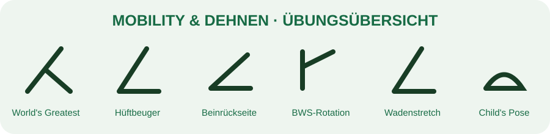

← TrainingsbibliothekMobility & Dehnen
12–15 Min · ruhig ausführen

1. World’s Greatest Stretch · 5 je Seite
2. Hüftbeuger · 30 s je Seite
3. Beinrückseite · 30 s je Seite
4. Brustwirbelsäulen-Rotation · 8 je Seite
5. Wadenstretch · 30 s je Seite
6. Child’s Pose · 40 s